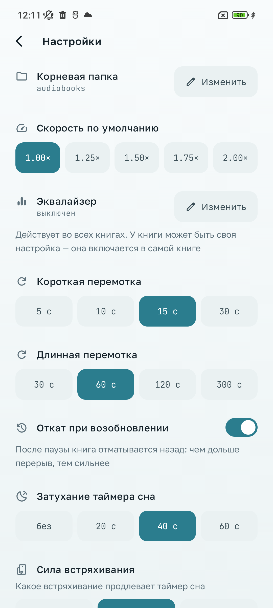

Аудиокниги
Слушайте аудиокниги из своей папки с удобным плеером
Приложение воспроизводит аудиокниги, которые уже хранятся на вашем устройстве. Выберите папку с книгами через системный интерфейс Android и обновите библиотеку по кнопке. Приложение показывает книги и главы, запоминает место прослушивания и продолжает воспроизведение при выключенном экране.
В плеере доступны перемотка, управление скоростью, таймер сна и эквалайзер. Книги можно просматривать в библиотеке и фильтровать по состоянию, автору, актёру и собственным меткам.
Приложение не предоставляет аудиокниги и не загружает их из интернета.
Что умеет
- Своя папка Библиотека собирается из папки, которую вы выбрали сами. Аудиофайлы приложение не изменяет.
- Память места Позиция сохраняется по книге и переносится вместе с ней — рядом с книгой лежит файл с прогрессом.
- Фоновое воспроизведение Управление в уведомлении и на экране блокировки, книга играет при выключенном экране.
- Главы
Главы из файлов
.m4bи отдельные файлы книги — переход, перемотка, откат при возобновлении. - Скорость и таймер сна Скорость воспроизведения и таймер, который можно завести заново встряхиванием.
- Эквалайзер Свои полосы частот и баланс — собственный обработчик звука, не системный.
- Вкладки, метки и фильтр Книги делятся по состоянию, фильтруются по автору, актёру и вашим собственным меткам.
- Светлая и тёмная тема Обе темы нарисованы отдельно, выбор — в настройках приложения.

Данные и приватность
Приложение не запрашивает у Android разрешение на доступ в интернет. В нём нет рекламы и аналитики, а ваши книги, история прослушивания и настройки никуда не отправляются.
Подробности — в политике конфиденциальности.